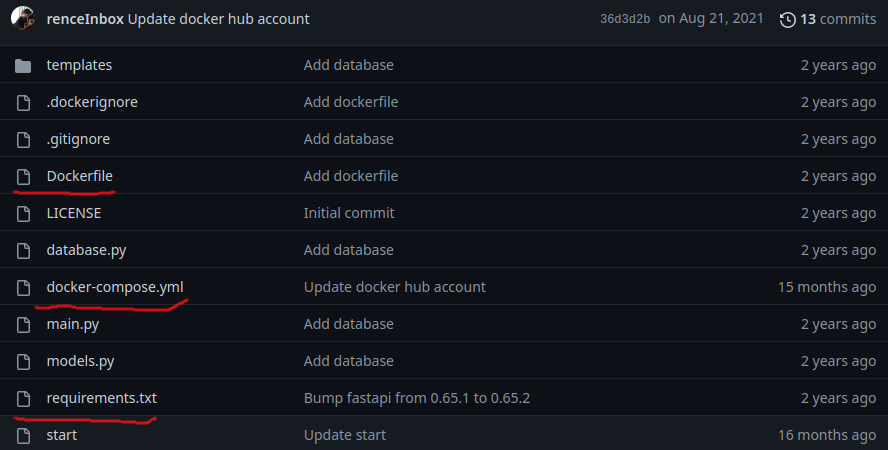
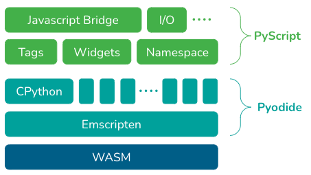
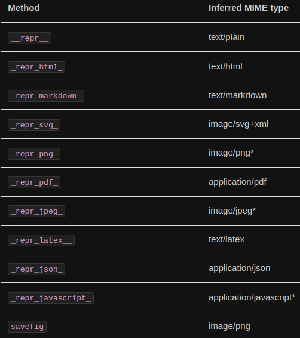

To the moon and back
Python on the web
Filipe Fernandes
Dec 08, 2022
Before we start
What are our needs?
- We need at fast serveless solution.
- With the basic scientific packages (numpy, scipy, pandas, matplotlib),
- and at least some met/ocean specific packages like: netCDF4 (netcdf-c, hdf5), geopandas (geos), cartopy (proj), cftime (cyhton extension), cf_units (udunits2), etc.
Please keep this in mind as we navigate this presentation.
Bit of history
Python on the web is not a new idea. There were many, attempts with different degrees of success, in the past years.
Running on a server
https://www.pythonanywhere.com/

Running on a server
Cloud plans
https://discuss.streamlit.io/t/what-happened-to-streamlit-cloud-plans/24894
Running on a server

HTMX Project
Transpilation
Transcrypt
In-browser re-implementation (failed live demos)
Brython
Skulpt
Can we do better than transpiling to/or reimplementing in JS?
- Webassembly (Wasm) is a binary instruction format for a stack-based virtual machine.
- Emscripten is a compiler toolchain to WebAssembly.
Wasm is the closest we ever got to a universal binary.
(Maybe) some successful live demos
pypjs
Pyodide
Why is Pyodide a good option?
- Based on Emscripten
- Heavy download but fast execution
- Full CPython + scientific distribution
- Pure Python packages are installable
- Compiled packages can be added
What else is missing?
We need to be able to:
- Easily deploy Apps as HTML without compiling or downloading you own Pyodide
- Control the installed packages
- Choose the pyodide version
- Access to the DOM and some JS ↔︎ Python exchange
- Some pre-built “web comfort” functions
Enter PyScript
- Builds on top of and manages pyodide
- No installation required
- Environment management
pyscript
How to use it?
<link rel="stylesheet" href="https://pyscript.net/latest/pyscript.css" />
<script defer src="https://pyscript.net/latest/pyscript.js"></script>and a pyscript tag,
What is the difference between PyScript and Pyodide?

Flexible config: control pyodide version
Flexible config: modules and even local wheels
PyScript: Labeled elements
<b><p>Today is <u><label id='today'></label></u></p></b>
<br>
<div id="pi" class="alert alert-primary"></div>
<py-script>
import datetime as dt
pyscript.write('today', dt.date.today().strftime('%A %B %d, %Y'))
def compute_pi(n):
pi = 2
for i in range(1,n):
pi *= 4 * i ** 2 / (4 * i ** 2 - 1)
return pi
pi = compute_pi(100000)
pyscript.write('pi', f'pi is approximately {pi:.3f}')
</py-script>pi
Many built-in functionalities
But… Before we dive into that…
Still under heavy-development

Some of the built-in functionalities
click
JavaScript to PyScript
PyScript to JavaScript
display

What can our community do with this?
glider of the day
ioos_qc explorer
ioos_qc csv uploader
What if we cannot access the web?
Summary
- Python in the browser: Enable drop-in content, external file hosting, and application hosting without the reliance on server-side configuration (no subscriptions, no remote downtime, no data is exchanged)
- Python ecosystem: Run many popular packages of Python and the scientific stack (such as numpy, pandas, scikit-learn, and more)
Summary
- Python with JavaScript: Bi-directional communication between Python and Javascript objects and namespaces
- Environment management: Allow users to define what packages and files to include for the page code to run
- Ship your app zero dependencies
- Visual application development: Use readily available curated UI components, such as buttons, containers, text boxes, and more